Major Cities and Towns
Guwahati
- Kamakhya Temple: An ancient temple dedicated to the goddess Kamakhya, famous for its stunning architecture and spiritual significance.
- Umananda Island: A small island on the Brahmaputra River, home to a temple and offering beautiful views of the city.
- Assam State Museum: A museum showcasing the rich culture, history, and art of Assam and Northeast India.
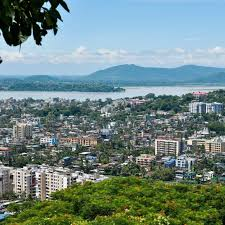
- Balaji Temple: A popular temple known for its serene atmosphere and beautiful surroundings.
- Brahmaputra River Cruise: A scenic cruise on the mighty Brahmaputra, offering stunning views and cultural experiences.
- Nehru Park: A spacious park featuring gardens, a pond, and open-air theater, perfect for relaxation and family outings.
Jorhat
- Jorhat Gymkhana Club: The oldest golf course in Asia, offering a scenic environment and a rich history.
- Majuli Island: The largest river island in the world, known for its unique culture and vibrant festivals.
- Thengal Manor: A heritage home showcasing Assamese architecture and rich cultural heritage.
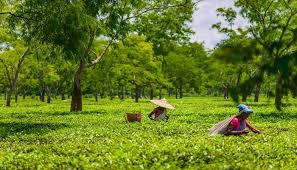
- Rai Durgah: A historic shrine dedicated to the saint Rai, located on a hill offering panoramic views.
- Sivasagar: Nearby historical town known for its Ahom-era monuments, including the Rang Ghar and Talatal Ghar.
- Tea Gardens: Jorhat is famous for its tea estates, providing a glimpse into Assam's tea culture.
Tezpur
- Agnigarh Hill: A historic site with beautiful views, associated with the legend of Usha and Anirudha.
- Tezpur Brahmaputra River: Known for its scenic beauty and serene river cruises.
- Chitralekha Udyan: A picturesque garden with well-maintained landscapes and a great place for relaxation.
- Umananda Temple: Located on an island in the Brahmaputra, this temple is dedicated to Lord Shiva and offers stunning views.
- Kaliya Bhomora Setu: An impressive bridge connecting Tezpur to the northern banks of the Brahmaputra.
- Tezpur University: A notable educational institution known for its beautiful campus and research programs.
Sivasagar
- Talatal Ghar: An ancient palace and fort complex built by the Ahom dynasty, known for its architectural brilliance.
- Rang Ghar: A unique amphitheater, one of the oldest in Asia, used for sports and entertainment during the Ahom period.
- Sivasagar Sivadol: A prominent temple dedicated to Lord Shiva, surrounded by beautiful ponds and gardens.
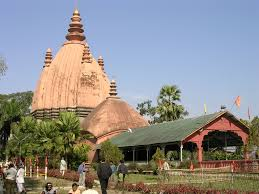
- Guhar Aai Mandir: A revered temple located in a cave, known for its unique ambiance and religious significance.
- Ahom Museum: A museum showcasing the history and culture of the Ahom dynasty through various artifacts.
- Joysagar Tank: One of the largest artificial lakes in Assam, offering scenic views and a peaceful atmosphere.
Sivasagar
- Talatal Ghar: An ancient palace and fort complex built by the Ahom dynasty, known for its architectural brilliance.
- Rang Ghar: A unique amphitheater, one of the oldest in Asia, used for sports and entertainment during the Ahom period.
- Sivasagar Sivadol: A prominent temple dedicated to Lord Shiva, surrounded by beautiful ponds and gardens.
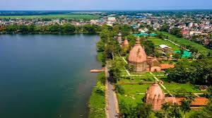
- Guhar Aai Mandir: A revered temple located in a cave, known for its unique ambiance and religious significance.
- Ahom Museum: A museum showcasing the history and culture of the Ahom dynasty through various artifacts.
- Joysagar Tank: One of the largest artificial lakes in Assam, offering scenic views and a peaceful atmosphere.
Hill Stations and Scenic Spots
Haflong
- Haflong Lake: A serene lake surrounded by hills, perfect for boating and enjoying the natural beauty.
- Jatinga: A famous village known for its mysterious bird suicides and stunning views of the surrounding landscape.
- Maibang: A historical site with ruins and remnants from the Kachari kingdom, offering scenic vistas.
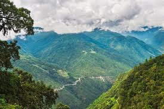
- Dikrang River: A beautiful river offering opportunities for fishing and picnicking along its banks.
- Borail Range: A scenic mountain range ideal for trekking and experiencing the rich biodiversity of the region.
- Haflong Market: A vibrant market where visitors can buy local handicrafts and enjoy the local culture.
Maibang
- Maibang Hill Station: A serene hill station offering breathtaking views of the surrounding hills and valleys, perfect for nature lovers.
- Dehing Patkai Wildlife Sanctuary: A nearby sanctuary known for its rich biodiversity and stunning landscapes, ideal for wildlife enthusiasts.
- Haflong Lake: A picturesque lake surrounded by lush greenery, perfect for boating and picnicking.
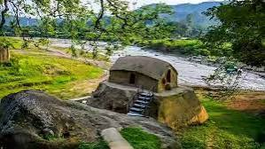
- Longtarai Hill: A scenic hill offering trekking opportunities and stunning views of the region.
- Maibang Fort: Historical ruins providing insight into the region's past and offering panoramic views.
- Local Handicrafts: Explore local markets for unique handicrafts and souvenirs made by indigenous artisans.
Pilgrimage Sites
Kamakhya Temple
- Kamakhya Temple: An ancient and sacred temple dedicated to the goddess Kamakhya, a prominent Shakti Peetha and a major pilgrimage site in Assam.
- Ambubachi Mela: An annual festival celebrated in June, attracting thousands of devotees and tourists to the temple.
- Temple Architecture: Known for its unique architecture, the temple features intricate carvings and is built in the Nilachal style.
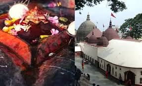
- Location: Situated on the Nilachal Hill, the temple offers breathtaking views of the surrounding landscape.
- Historical Significance: The temple has a rich history and is associated with various legends and beliefs in Hindu mythology.
- Visitors: The temple attracts pilgrims and tourists alike, making it a significant cultural and religious site in India.
Sivadol
- Sivadol Temple: A revered temple dedicated to Lord Shiva, known for its stunning architecture and spiritual significance.
- Dehing Patkai Wildlife Sanctuary: A nearby sanctuary offering beautiful landscapes and rich biodiversity.
- Namdang Stone Bridge: An ancient bridge with historical importance, showcasing exquisite craftsmanship.
- Shiv Dham: A serene site for meditation and spirituality, surrounded by natural beauty.
- Local Markets: Experience the vibrant culture of Assam by exploring local handicrafts and traditional items.
- Annual Festivals: Attend the famous festivals held at the temple, attracting devotees from all over the region.
Natural Attractions
Majuli Island
- Satras: Traditional monasteries showcasing unique Assamese culture, art, and dance.
- Majuli's Natural Beauty: Stunning landscapes with lush greenery, rivers, and vibrant sunsets, perfect for nature lovers.
- Bird Watching: A paradise for bird watchers, especially during migratory seasons, with various species to observe.
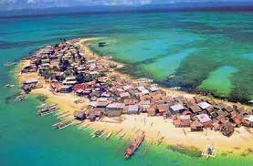
- Rural Life: Experience the rich cultural heritage of Assam through local festivals, crafts, and traditional performances.
- River Cruises: Enjoy scenic boat rides along the Brahmaputra River, offering stunning views of the island's landscape.
- Eco-Tourism: Participate in sustainable tourism practices while exploring the island’s biodiversity and local communities.
Manas National Park
- Wildlife Sanctuary: A UNESCO World Heritage Site known for its rich biodiversity, including endangered species like the Assam roofed turtle and the pygmy hog.
- River Manas: The park is bordered by the river, offering scenic views and opportunities for river rafting and boating.
- Elephant Safari: Explore the park on the back of an elephant for a unique way to view wildlife.
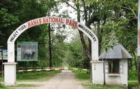
- Bird Watching: Home to numerous bird species, including migratory birds, making it a paradise for birdwatchers.
- Nature Trails: Various trekking routes allow visitors to explore the park's natural beauty up close.
- Cultural Experiences: Engage with the local Bodo community to learn about their culture and traditions.
Adventure and Eco-Tourism
Bhalukpong
- Bhalukpong River: A popular spot for white-water rafting, offering thrilling adventures amidst beautiful landscapes.
- Eco-Camp: A unique camping experience that allows visitors to immerse themselves in nature while enjoying eco-friendly accommodations.
- Tipi Orchid Centre: Home to a variety of orchids, this center is perfect for nature lovers and offers a glimpse into local flora.
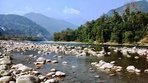
- Pakke Wildlife Sanctuary: A haven for wildlife enthusiasts, offering opportunities for trekking, bird watching, and exploring diverse ecosystems.
- Local Trekking Trails: Scenic trails that allow visitors to explore the breathtaking landscapes and rich biodiversity of the region.
- Adventure Sports: Opportunities for rock climbing, trekking, and camping, making it a perfect destination for adventure seekers.
Nameri National Park
- Eco-Tourism: Nameri National Park is known for its rich biodiversity, offering a unique experience for nature lovers and eco-tourists.
- Adventure Activities: Visitors can enjoy activities such as river rafting, trekking, and wildlife spotting in the picturesque landscapes.
- Bird Watching: The park is home to a variety of bird species, making it a paradise for bird watchers.
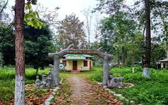
- Nature Trails: The park offers well-marked trails for trekking, allowing visitors to explore its lush greenery and diverse wildlife.
- Wildlife Spotting: Home to various species, including elephants, tigers, and several rare birds, making it a great spot for wildlife enthusiasts.
- Camping Opportunities: The park provides camping facilities for those looking to immerse themselves in nature.
Historical Sites
Rang Ghar
- Rang Ghar: Known as the "Coliseum of the East," it is one of the oldest amphitheaters in Asia, built during the Ahom dynasty in the 18th century. It served as a venue for various cultural events and sports.
- Architecture: The structure features an impressive two-storied building with arched entrances and a massive roof, showcasing intricate designs typical of Ahom architecture.
- Historical Significance: Rang Ghar played a crucial role in the cultural and social life of the Ahom kingdom and is now a protected monument.
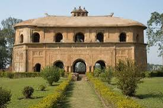
- Visiting Information: Rang Ghar is located in Sivasagar, Assam, and is open to visitors throughout the year, making it a popular tourist attraction.
- Nearby Attractions: Visitors can explore other historical sites in Sivasagar, including Talatal Ghar and the Sivasagar Sivadol.
- Cultural Events: The site often hosts cultural festivals and events that showcase traditional Assamese music and dance.
Talatal Ghar
- Historical Significance: Talatal Ghar is an ancient palace built in the 18th century by the Ahom kings, serving as a royal residence and military base.
- Architecture: The palace features remarkable architecture with multiple stories, secret tunnels, and intricate carvings that reflect the artistry of the time.
- Location: Situated in Sivasagar, it is a significant part of Assam's cultural heritage and attracts many visitors interested in history.
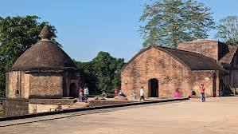
- Tourist Attraction: The site is a popular tourist destination, offering insights into the history and culture of the Ahom dynasty.
- Surrounding Area: Visitors can explore the nearby Sivasagar tank and other historical monuments that are part of the region's rich heritage.
- Best Time to Visit: The ideal time to visit is between October and March when the weather is pleasant for sightseeing.
Wildlife Sanctuaries and National Parks
Kaziranga National Park
- Rhino Observation: Home to the largest population of the Indian one-horned rhinoceros, offering thrilling wildlife sightings.
- Jeep Safaris: Exciting guided jeep tours that allow visitors to explore the park's diverse landscapes and wildlife.
- Biodiversity: A UNESCO World Heritage Site, renowned for its rich flora and fauna, including elephants, tigers, and various bird species.
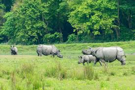
- Kaziranga National Park Elephant Safari: A unique way to explore the park's interiors while riding on elephants.
- Bird Watching: A paradise for bird enthusiasts, with over 500 species of birds recorded in the park.
- Flora and Fauna: The park is also home to numerous plant species and a variety of wildlife, including swamp deer and wild buffalo.
Pobitora Wildlife Sanctuary
- Home to One-Horned Rhinos: Pobitora is famous for its population of the Indian one-horned rhinoceros, making it a prime location for wildlife enthusiasts.
- Rich Biodiversity: The sanctuary is home to various species of birds, deer, and other wildlife, set against a backdrop of lush greenery.
- Birdwatching Opportunities: With over 200 species of birds, including migratory birds, it is a haven for birdwatchers.
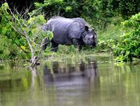
- Safari Tours: Visitors can enjoy jeep safaris and elephant rides to explore the sanctuary's rich wildlife.
- Beautiful Landscapes: The sanctuary offers picturesque landscapes, including wetlands and grasslands, ideal for photography and nature walks.
- Conservation Efforts: Pobitora plays a significant role in rhino conservation and protection of their habitat.
Other Notable Attractions
Tea Gardens of Assam
- Assam Tea Gardens: Renowned for their lush green landscapes and sprawling tea estates, the tea gardens of Assam are a major attraction for tourists.
- Tea Tasting Tours: Visitors can enjoy guided tours that include tea tasting sessions, learning about the tea-making process, and exploring the history of Assam tea.
- Scenic Views: The gardens offer breathtaking views of rolling hills and vibrant greenery, making them perfect for photography and nature walks.
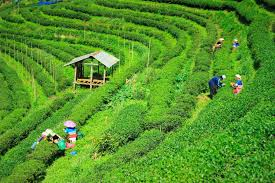
- Cultural Experience: Many tea estates offer cultural experiences, including traditional Assamese music and dance performances.
- Wildlife and Biodiversity: Some tea gardens are home to diverse flora and fauna, providing opportunities for nature enthusiasts to explore.
- Shopping for Tea: Visitors can purchase fresh Assam tea and local handicrafts from estate shops.
Sualkuchi
- Sualkuchi Village: Known as the "Manchester of Assam," famous for its handloom silk production and weaving.
- Silk Weaving Units: Visitors can explore various silk weaving units and witness traditional Assamese weaving techniques.
- Mahapurush Srimanta Sankardev Kalakshetra: A cultural institution dedicated to promoting Assamese culture and heritage.
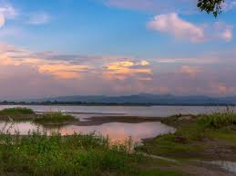
- Bhogali Bihu Festival: Experience the vibrant Bihu festival celebrated with traditional music, dance, and food.
- Assamese Cuisine: Taste local delicacies at various eateries, especially the traditional rice and fish dishes.
- Scenic Beauty: Enjoy the lush green landscapes and tranquil atmosphere of this picturesque village.